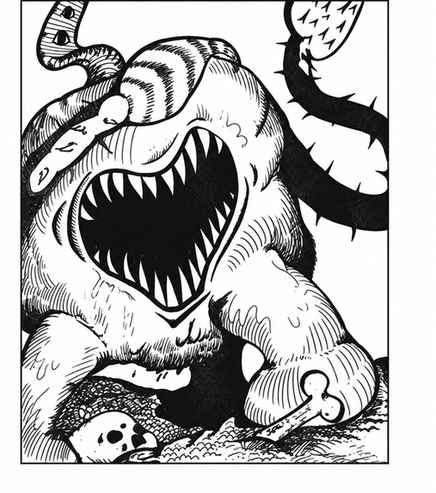

奥提尤格 · Otyugh
 |
|
奥提尤格是杂食性的怪异拾荒者，完全不介意在粪便、内脏和腐肉中加入一点新鲜肉类。它们讨厌直射阳光和强光，因此多在地下出现；90% 的情况下只有一只，因为奥提尤格通常与其他地下怪物共生。它们会与强大怪物维持休战，以便拾取排泄物和其他残渣，通常住在粪堆与垃圾中并以此为生。
奥提尤格的感觉器官长在茎状突起上，两条触手从丑陋身体伸出。眼睛总是露在它筑巢的腐物之上，因此不会被突袭；触手有锐利棱脊，用来打击猎物；嘴部像吸盘，内有大量牙齿。咬中目标时有 90% 的机会传染斑疹伤寒。奥提尤格本身对人类意义上的财宝毫无兴趣，但共生伙伴偶尔会珍视财宝，并以允许它们半共生居住为条件要求其看守。奥提尤格说自己的语言，并具有半心灵感应能力，因此在愿意时常能与其他生命交流。另见“新奥提尤格”。